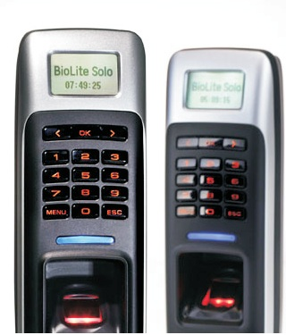
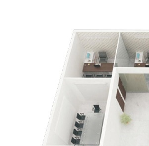
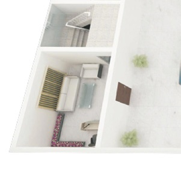
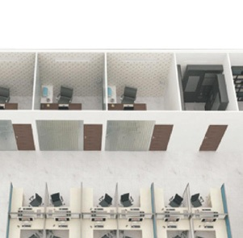
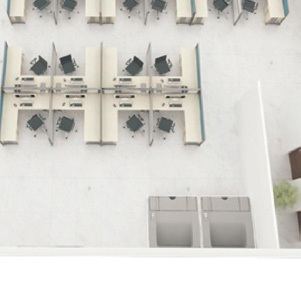
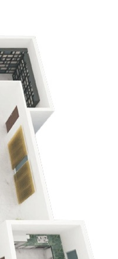
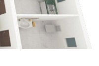

Ceasefire's Access Control Systems
Introducing the countr's most advanced Access Control System.
Employees, staff, clients, deliverymen, courier... these days, it's hard to keep track of people on your premises. Security guards do their best to check records and credentials, but there's always a chance of a security breach. With so many people coming and going, restricted areas can be easily accessed, important documents and material copied and goods and expensive equipment can be stolen. What's more, guards and people can even be bribed to let an unauthorised person enter.
To make matters worse, shift duties add to the confusion. And valuable man-hours are spent on registers, records and overall attendance.
The need of the hour is a system that grants access to only authorised personnel. A system that's intelligent enough to differentiate one employee from the other, add layers of access control and even track and monitor attendance.
Ceasefire brings you just a system - the Ceasefire Access Control System, the most advanced in the country.
Why Ceasefire Access Control
At Ceasefire, we believe in looking into the future and being in control. Looking every threat in the eye and producing a weapon so powerful and advanced, it wipes out every trace of danger. Because we believe that if nothing is left to chance, nothing can possibly go wrong.
Which is why we've designed the Ceasefire Access Control System - a system that allows you full control. Produced to our exacting standards in terms of quality, design and performance, in some of the world's leading manufacturing facilities, this top-of-the-line range is a system like no other.
It's designed to present trespassers with complex layers of security they haven't even heard of, much less experienced. From password and PIN protected doors to biometric ID restricted areas, the Access Control System guarantees complete protection. In other words, it chooses who can gain access and who can't, while performing all the duties of a time-keeper, attendance monitor and salary manager. It records, tracks and reports 24x7.
How the Ceasefire Access Control System works.
Access control reader
Server and record room
Electromagnetic lock
Server and record room
|   |  |   |
Secure I/O
Reception
Electromagnetic lock
Server and record room
Access control reader
Server and record room
An access control point can be a door, turnstile, parking gate, elevator, or other physical barrier where granting access can be electronically controlled.
Access control can contain several elements. At its most basic, is a standalone electric lock, which is unlocked by an operator with a switch. To automate this, operator intervention is replaced by a reader. Readers could be a keypad where a code is entered, a card reader, or a biometric reader. Readers then send the card number to an access control panel that verifies the number against an access list.
To monitor the door position, magnetic door switches are used. Generally only entry is controlled. In cases where the exit is also controlled, a second reader is installed on the other side of the door. In cases where exit is not controlled, a device called request-to- exit (RTE) is used. Request-to-exit devices can be a push-button or a motion detector. When the button is pushed or the motion detector detects motion at the door, the door alarm is temporarily ignored while the door is opened.
All access door hardware is connected directly to intelligent or semi-intelligent readers. Readers usually do not make access decisions, and forward all requests to the main controller.
Only in the event that the connection to the main controller is unavailable, the readers use their internal database to make access decisions and record events. Semi-intelligent readers that have no database and cannot function without the main controller should be used only in areas that do not require high security. Main controllers usually support 16 to 64 readers.
The Ceasefire Access Control System also makes for the perfect attendance record-keeper. Loaded with face recognition, access card entry and supreme SFM fingerprint modules designed to provide biometric security, the Ceasefire Access Control System gives a powerful verification performance that wipes out the possibility for any proxy attendances. Also, with its easy integration with various other external databases, other functions like work-hour calculation and salary calculation become an easy task.
The Ceasefire Access Control System features.
The Ceasefire Access Control System is engineered to perfection with the best-selling fingerprint module in the world. Along with supreme algorithm and multiple sensor options it has negligible error rates, giving you an unrivalled performance.
All the products in this range are pocket-sized power-houses. With a water-proof tough exterior that comes loaded with features like low power consumption and fast power-on time, the Ceasefire Access Control System sure is a smarter and versatile PC Security Solution for your organisation.
The Ceasefire Access Control System comes with a Distributed IP Access Control System. This allows for easy integration with various other external interfaces such as user management, door configuration, shift management, etc. Thus the Ceasefire Access Control System serves as more than just an access control system.
Built for high wet and dry finger performance, low power consumption and fast power-on time. The Ceasefire
The Ceasefire Access Control System gives you more.
Perhaps the most important feature of the Ceasefire Access Control System is its Biometric Time Attendance capabilities that allow administrators to define time categories, shifts and daily schedules. The Biometric Time Attendance features
can be used to enforce compliance with Check-In and Check-Out procedures, restrict access to off-duty personnel, and report attendance data.
- Set and modify time schedule of users in various ways to suit your organisation’s needs
- Daily and weekly schedules
- Daily working schedule configuration
- Overtime calculation
- Rounding
- Grace
- Daily and weekly cycle scheduling
- Up to 64 shifts configurations
- It displays time and attendance events
- Real-time monitoring by T&A event
- Daily/individual summary and report
- Report by TA result (like late or absence)
- Work hour displayed by time category.

- Holiday schedule configurable by group
- Leave schedule configurable by user
The complete range of Ceasefire Access Control System products.
The BioStar constantly monitors every device, ensuring that the system is performing at its best.
Instant matching and rapid response come together in this system that boasts an exceptionally low error rate.
A perfect blend of face recognition with Dual-finger Technology, D-Station guarantees accuracy and rapid response.
Equipped with a massive database of 2,00,000 fingerprints, 10,00,000 event logs and negligible error rate.
This slim, pocket-sized weatherproof device manages attendance and keeps track of people entering and exiting your premises.
A combination of biometrics and IP technology, this system has a central database of 5,000 fingerprints.
A standalone system with a database of 200 fingerprints, BioLite Solo is ideal for small premises.
A standalone system with a database of 200 fingerprints, BioLite Solo is ideal for small premises.
It’s the world’s first IP access control terminal with a touchscreen LCD and face detection technology.
With its distributed intelligence concept, XPass is a smart reader and controller, with a database of 40,000 fingerprints and a instant display of 50,000 event logs.